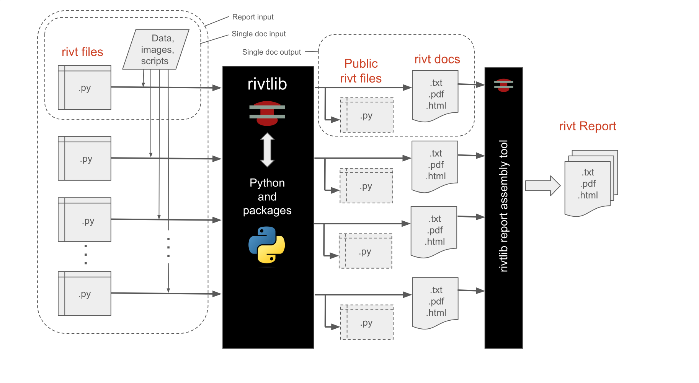

B.1 Overview#
[1t] Summary#
rivt is an open source Python project that imports the rivtlib Python package and dependencies ([6t] Project requirements). The lightweight Pyzo IDE is also installed for editing and publishing rivt file examples. The VSCode IDE is a more full featured IDE that is part of the rivt framework and installed separately.
A rivt file publishes a formatted rivt doc as a text, PDF or HTML file. A rivt file is a Python file (.py) that imports the rivtlib Python package and includes rivt markup. A collection of rivt docs may be collated as a rivt report.
rivt file examples are provided here. An interface for searching public rivt files on GitHub is here. A public rivt file is all or parts of a rivt file the author chooses to share under an Open Source license. rivt itself is distributed under the MIT open source license. (see [2t] Licenses).
[2t] rivt docs#
{kind=link}

rivt Doc Processing
Each rivt file outputs a corresponding doc in the format specified in rv.D. A doc number has the form:
rvAnn-filename.py
where rv is a required prefix, A is an alphanumeric character and nn are two digit non-negative integers.
A rivt report is organized using the rivt doc numbers. If the rivt file names are:
rvA01-filename.py
rv105-filename.py
rv212-filename.py
the report numbers would be:
A.1 (division A, subdivision 1)
1.5 (division 1, subdivision 5)
2.12 (division 2, subdivision 12)
Note that leading zeroes are dropped. Docs are sorted alpha-numerically into divisions and subdivisions in the report.
Docs are assembled from sources and published using a specified folder structure. The singledocB variable overrides the default report structure and specifies that resource files and docs are read from and written to the rivt file folder. It is intended for simpler, standalone docs with more limited format control. The comment variable is specified immediately after the import statement:
import rivtlib.rvapi as rv
# rv singledocB = True
The default setting is False.
[2t] rivt API#
The rivt API includes API functions, [3t] Markup and files. The API is designed to be:
- lightweight
rivt markup is made up of about 3 dozen tags and commands, and wraps reStructuredText.
- flexible
A rivt file produces a text, HTML or PDF doc. Multiple docs can be organized into a report.
- extensible
rivtlib is written in Python with direct access to thousands of Python packages.
[3t] Markup#
An API function starts in the first column and takes a triple quoted rivt string (rS) argument. The first line of a rivt string is a header substring, followed by a content substring indented 4 spaces for improved readability and section folding.
The header substring specifies the section title and other processing parameters. The content substring includes rivt markup and other arbitrary text. For further details see here.
rv._("""Section Label | parameters
Content text that is
indented four spaces.
...
""")
[4t] Folder/Files#
A rivt file is a Python plain text file ( .py ) that includes rivt markup and imports the rivtlib package and API into the rv namespace:
import rivtlib.rvapi as rv
rivt files are stored in a root folder designated with the prefix rivt-. Each rivt file and corresponding rivt doc has a prefix that is used to organize the report. The prefix has the form
rvANN-filename.py
where A is an alpha-numeric character used for organizing report divisions, and NN is a two digit number used to organize sub-divisions. The file name is used as the doc title unless overridden in rv.D. Use underscores or hyphens rather than spaces to seprate words in the file name. They are replaced with spaces when a doc title is extracted.
Folder Key- Required names or prefixes are shown in brackets [ ].
- Folders containing files edited by author start with a capital letter.
- Folders containing author provided files are marked with a single bar ( | ).
- Folders/files generating by rivtlib are marked with a double bar
Top-Level Single Doc Folders (see [3t] Single docs)
[rivt-]single-doc-label/ Single doc Folder
├── [rv101-]filename.py | rivt file
├── multiple source files | data, image and function files
├── addunits.py | define new units
├── rv-101-log.txt || log file
├── rv-101-docname.py || public rivt file
├── README.txt || searchable text doc
├── [.vscode]/ | optional VSCode settings
├── [rstdocs]/ | rst style input
├── [pdfdocs]/ | pdf output
├── [htmldocs]/ || html output
├── [latexdocs]/ || latex output
└── [textdocs]/ || text output
Top-Level Report Folders (see [2t] Reports)
[rivt-]Report-Label/ Report Folder Name
├── [rv101-]filename1.py | rivt files
├── [rv102-]filename2.py
├── [rv201-]filename3.py
├── [rv202-]filename4.py
...
├── [.vscode]/ | optional VSCode settings
├── [Files]/ | files provided by authors
├── [publish]/ || doc and report files
├── [stored]/ || files written by rivtlib
└── README.txt || searchable text report
The three primary rivt folders are:
- Files
Images, data, code and text provided by the author.
- publish
docs, reports and public rivt files generated by rvitlib
- stored
Files generated by rivtlib. Files include stored excluded sections identified in headers, log files and value files. Files may be referenced in multiple docs.
Folders starting with a capital letter are intended for files edited by the author. Lowercase folders are intended for files generated by rivtlib. The complete folder structure with subfolders is shown here.